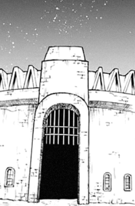

Chapter 3.3 - Subdued
There was still remaining rope from the kitty incident and you use it to reach the cliff - hoping to investigate just for a bit.
The way down is a creaky, loose bridge that leads to the darkness of the cliff. Nothing much to see, you guess. Suddenly, a strong wind catches you off guard and you loose your grip on the rope. With no more way out, your mouth opens wide and your frustrated by your stupidity.
You look back to the slightly creepy path and make your way down slowly, the dim light still illuminating your path. But, as you go further, the light slowly disappears and you feel a presence approaching below.
An yellow, round eye glimmers towards the direction, and suddenly you're unable to move. Its figure grows bigger and visible, you start noticing its black robe, white mask with a set of horns on the head - there's no doubt thats a demon. 
Soon enough, you're eye-to-eye with a creature from the depths of hell, twice your size. To your surprise, it starts talking.
"Greetings, human, its me Nicholas-"
"Let me go, you monster."
"Monster? Heh." he touches your hoodie and lifts it up suspensefully, "You're ripe for the taking, heh..."
It smiles, covering the length of its mask, and its sets of teeth terrify you. You don't believe that he is Nicholas. He grabs you by the waist and carries you above the wooden bridge. You watch as the sun waves its goodbye... now its too late... you've failed your family.
The creature steps on the grass and creates firey footprints with its demonic hooves. He heads to the direction of the house following the 'path'. How does he know about it?
He almost gets to the mansion but decides to go to the left. He walks perpendicular and reaches another mansion. Except this looks much bigger. 
Your mind hurts as if a hidden memory tries to force its way in. You remember this place; you've lived here before along with Nicholas as a kid. Now all dusty and forgotten, its sparkle and charm is lost.
The demon makes its way to an underground area right after entering the gates and makes his way down. Below, a line of prison cells align the path then it goes upwards, to a huge chamber built with a throne in the middle.
He approaches it and boastfully sits.
"One day all of this will be mine!" he shouts, "Now tell me, would you like to know everything about you're family?"
Confused, you don't respond.
"Oh come on! You can't tell me you've never been suspicious! I mean, a mansion in the middle of nowhere, a guy you've never met and a being you've never seen. How idiotic could you be?"
He provokes you but it does make sense... do you listen to him or reject his offer?